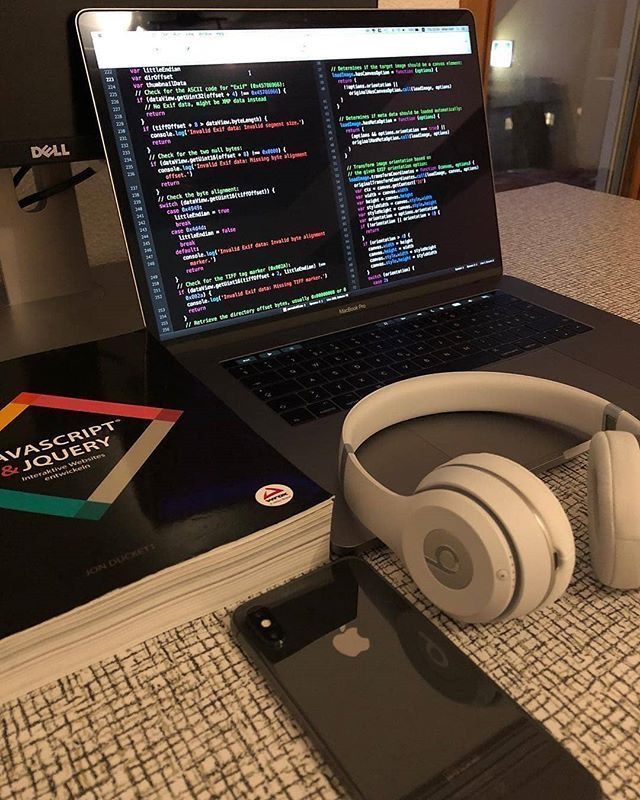

Brief History of The Web
The history of the World Wide Web dates back to the 20th century to the first concepts of the visionaries. Vannevar Bush proposed the idea of a hypertext system even before the creation of the precursor to the internet, ARPANET by the U.S. Department of Defense, 1969 (source: Wikipedia). That year a message “login” was successfully and fully sent between the University of California and the Stanford Research Institute.
However, the whole World Wide Web that we know today alongside with the HTML, CSS and URLs, was invented by a man called Tim Berners-Lee in 1993. While working at CERN, he came up with a plan for linked information systems and published the outline of the World Wide Web project two years before it was totally completed and shared to the public. (source: J. Gillies & R. Cailliau)
1990 Berners-Lee along with a Belgian systems engineer Robert Cailliau created the first web browser (World Wide Web) and the first web server that was actually Tim's NeXT desktop. This marked the formalization of the World Wide Web as a means to access, share, and navigate information on the internet. The global impact on the communication between people was so significant that Tim Berners-Lee was dubbed a knight by the Queen of England in 2004. (source: Wikipedia)
The World Wide Web quickly gained popularity when Mosaic, a web browser created in the United States at the National Center for Supercomputing Applications (NCSA) located at the University of Illinois and released in September 1993, became available and allowed the people to use the web relatively simply, including the graphics that had been functioning on personal computers of that time. A web browser with tabs, Netscape Navigator, debuted the next year. Not for long did the software giant Microsoft Corporation remain aside, and designed its own web browser Internet Explorer and implemented it into the Windows operating system in 1996. By the mid-1990s the World Wide Web already had millions of active users.
Later on, the Web started to evolve drastically. Starting from users contributing to generate their own content and ending with semantic web, advanced cybersecurity and progressive apps inside the browser.
In 2000s, the age of so-called Web 2.0 started to occur. It is characterized by a way more dynamic and interactive collaboration, with users contributing to generate their own content. With the World Wide Web being actively in use, platforms like Facebook, Twitter and LinkedIn became popular, allowing users to share and interact globally. Applications like such as Google Docs or Wikipedia also brought also brought a massive benefit to the collaboration in general. The commercial field (advertisements, subscriptions and online academic courses) also became prominent with the help of the web. The biggest example here is Amazon. (source: ResearchGate)

How a Web Page is Delivered
The starter point of delivering a web page is the browser where you, as the user, are looking for what you need. Regardless if you type in the URL (Uniform Resource Locator, or simply the web address) of the desired website or find the link in the Google search, a single click launches a process of delivery that can be divided into separate steps. (sources: Mozilla, HowStuffWorks, YouTube)
First of all, the chosen URL is converted into an IP address (Internet Protocol Address) with the DNS (Domain Name System). This step involves a request to the DNS, where all the Protocol addresses in the world are stored, to receive the IP address of the desired web page that is connected to the simple domain name a user has put in (e.g. www.griffith.ie)
The browser then sends an HTTP (Hypertext Transfer Protocol) request with the obtained IP address to the web server. This is where our web page lives. That request is sent to the correct server and has the requirements for the specific page and all the supporting resources (HTML, CSS, JavaScript, images) with it.
The web server receives the request and processes it by searching through its databases and collecting all necessary resources to “complete the order”. After that, the server is ready to send back an HTTP answer with an HTML file, alongside with the additional resources attached.
In the end, the browser receives the response from the server and begins rendering the web page. It creates the DOM (Document Object Model) and implements all the additional resources into the page for the user to see: builds the styling information with the CSS and executes JavaScript for more interactivity. Once the page is fully loaded and displayed, the connection between the browser and the server is finally closed.
How Web Pages Work
HTML is a markup language used to categorize text into paragraphs, headings, sections, images etc., that are defined by tags of which HTML's elements are built. The markup language sorts the text into hierarchical boxes and gives them a unique structure without changing their design. Web developers use HTML to create the blueprint, a basic structure of a web page, which then cooperates with the CSS file and JavaScript to fulfill the content with design and interactivity. (source: freeCodeCamp)
CSS (Cascading Style Sheets) is a style sheet language used to describe the visual presentation of HTML documents. For the web developers, it is a tool to decorate and relocate the page's content for readability and a pleasant appearance. CSS works with HTML elements by applying styles to them, specifying colors, fonts, spacing, and positioning. (source: javatpoint)
Chris Kolade at freeCodeCamp says: (source)
the symbiosis of HTML, CSS, and JavaScript can be described like so: HTML is the structure of a house, the walls and roofs, CSS is the interior and exterior decor, and JavaScript is the electricity, water system, security, and many other functional features that make the house livable.